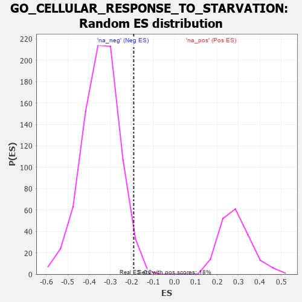

| | | Dataset | 7d |
| Phenotype | NoPhenotypeAvailable |
| Upregulated in class | na_neg |
| GeneSet | GO_CELLULAR_RESPONSE_TO_STARVATION |
| Enrichment Score (ES) | -0.19128615 |
| Normalized Enrichment Score (NES) | -0.55221176 |
| Nominal p-value | 0.9767157 |
| FDR q-value | 1.0 |
| FWER p-Value | 1.0 |
Table: GSEA Results Summary
 Fig 1: Enrichment plot: GO_CELLULAR_RESPONSE_TO_STARVATION
Fig 1: Enrichment plot: GO_CELLULAR_RESPONSE_TO_STARVATION
Profile of the Running ES Score & Positions of GeneSet Members on the Rank Ordered List
| PROBE | GENE SYMBOL | GENE_TITLE | RANK IN GENE LIST | RANK METRIC SCORE | RUNNING ES | CORE ENRICHMENT | | 1 | RRP8 | | | 403 | 0.699 | 0.0006 | No |
| 2 | WRN | | | 469 | 0.649 | 0.0402 | No |
| 3 | MYOD1 | | | 504 | 0.628 | 0.0821 | No |
| 4 | TFEB | | | 839 | 0.522 | 0.0783 | No |
| 5 | KPTN | | | 1341 | 0.422 | 0.0461 | No |
| 6 | INHBB | | | 1514 | 0.388 | 0.0530 | No |
| 7 | NPRL3 | | | 1592 | 0.375 | 0.0709 | No |
| 8 | FNIP1 | | | 1798 | 0.338 | 0.0699 | No |
| 9 | BRSK2 | | | 1979 | 0.308 | 0.0699 | No |
| 10 | NPRL2 | | | 2184 | 0.278 | 0.0646 | No |
| 11 | WIPI2 | | | 2618 | 0.210 | 0.0254 | No |
| 12 | BECN1 | | | 2828 | 0.179 | 0.0123 | No |
| 13 | WNT4 | | | 3023 | 0.146 | -0.0015 | No |
| 14 | FADS1 | | | 3242 | 0.114 | -0.0206 | No |
| 15 | MAPK3 | | | 3589 | 0.062 | -0.0596 | No |
| 16 | WDR59 | | | 3692 | 0.045 | -0.0692 | No |
| 17 | GCN1 | | | 3923 | 0.006 | -0.0978 | No |
| 18 | ATG5 | | | 4051 | -0.016 | -0.1126 | No |
| 19 | MTOR | | | 4114 | -0.025 | -0.1186 | No |
| 20 | TBL2 | | | 4175 | -0.038 | -0.1234 | No |
| 21 | RRAGD | | | 4183 | -0.039 | -0.1214 | No |
| 22 | SESN1 | | | 4192 | -0.041 | -0.1195 | No |
| 23 | RRAGA | | | 4223 | -0.046 | -0.1199 | No |
| 24 | RPTOR | | | 4252 | -0.050 | -0.1197 | No |
| 25 | LRRK2 | | | 4467 | -0.087 | -0.1403 | No |
| 26 | ITFG2 | | | 4796 | -0.156 | -0.1701 | Yes |
| 27 | PPM1D | | | 4805 | -0.158 | -0.1595 | Yes |
| 28 | SIK2 | | | 4875 | -0.172 | -0.1555 | Yes |
| 29 | AOC1 | | | 4993 | -0.197 | -0.1558 | Yes |
| 30 | FLCN | | | 5140 | -0.235 | -0.1569 | Yes |
| 31 | PICK1 | | | 5265 | -0.263 | -0.1532 | Yes |
| 32 | WDR24 | | | 5568 | -0.338 | -0.1664 | Yes |
| 33 | DAP | | | 5732 | -0.386 | -0.1585 | Yes |
| 34 | MTMR3 | | | 5809 | -0.408 | -0.1381 | Yes |
| 35 | ATG7 | | | 5858 | -0.420 | -0.1132 | Yes |
| 36 | SZT2 | | | 5882 | -0.429 | -0.0845 | Yes |
| 37 | XBP1 | | | 6011 | -0.475 | -0.0657 | Yes |
| 38 | XPR1 | | | 6250 | -0.555 | -0.0549 | Yes |
| 39 | RALB | | | 6399 | -0.617 | -0.0281 | Yes |
| 40 | STK24 | | | 6550 | -0.684 | 0.0033 | Yes |
| 41 | VPS41 | | | 6850 | -0.841 | 0.0274 | Yes |
| 42 | ASNS | | | 7595 | -1.547 | 0.0474 | Yes |
Table: GSEA details [plain text format]

Fig 2: GO_CELLULAR_RESPONSE_TO_STARVATION: Random ES distribution
Gene set null distribution of ES for GO_CELLULAR_RESPONSE_TO_STARVATION